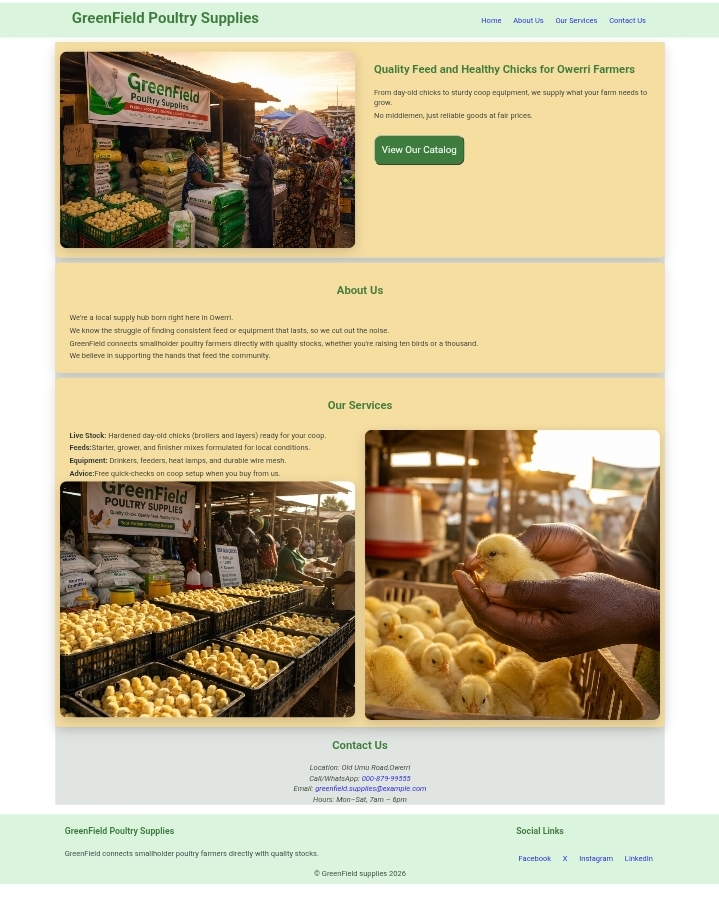
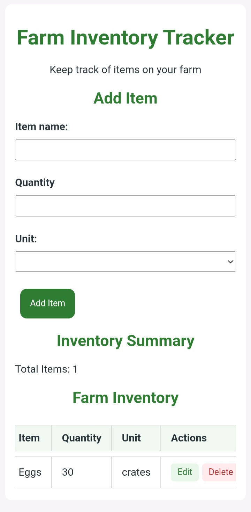
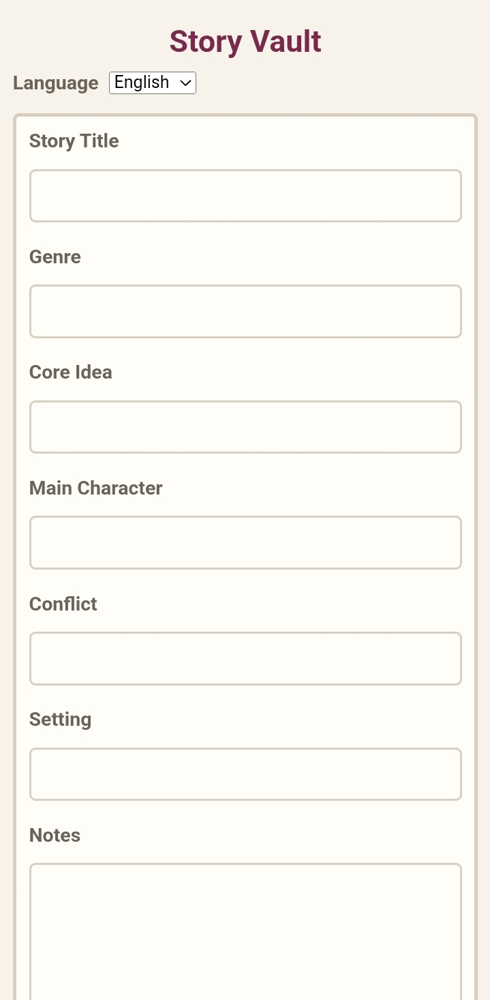

Simple websites for businesses that want a professional online presence
I design mobile-friendly websites for small businesses, professionals and agricultural businesses, giving their customers a clear place to learn about their services and get in touch.
Services
Business Websites
A simple website gives your customers one place to see what your business offers, learn about your services, find your contact information and connect with you.
About
Obasi Lilian U.
I have a background in Agricultural Science Education and I'm building my career in frontend web development. I build simple, practical websites for businesses and professionals, with a particular interest in agricultural businesses. I'm also a creative writer, and I enjoy building digital projects that connect my interests in technology, agriculture, and storytelling.
Projects
Farm Expense Tracker
Farm Expense Tracker is a web application for recording and monitoring farm expenses. Users can add expenses, organise them by category, view totals and keep their records stored in the browser.

GreenField Poultry Services
Concept Website | Demo Project
GreenField Poultry Services is a concept website for a poultry business in Owerri. The website presents the business, its poultry products and farm supplies, and gives customers a simple way to learn about its services and get in touch.
Visit the website GreenField Poultry Services Website
Farm Inventory Tracker
Farm Inventory Tracker is a web application for recording and managing farm inventory. Users can add items, record quantities and units, edit existing records, delete items, and keep their inventory stored in the browser.


StoryVault App
StoryVault is a web application for organising and managing story ideas. Users can save, edit, and delete story concepts while keeping their ideas stored in the browser.
Contact
Have a business that needs a website?